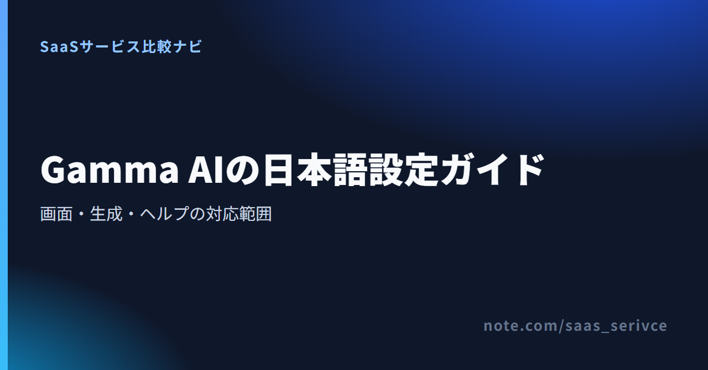
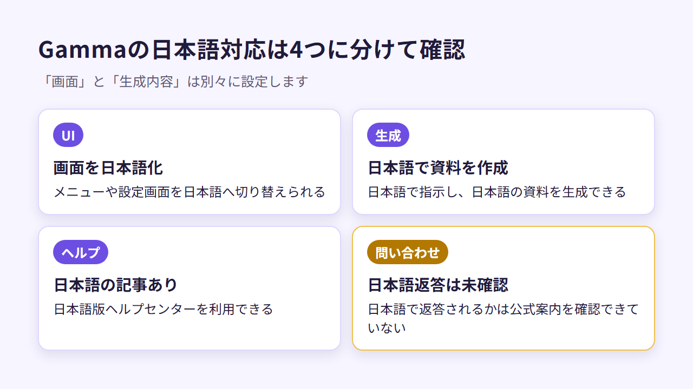
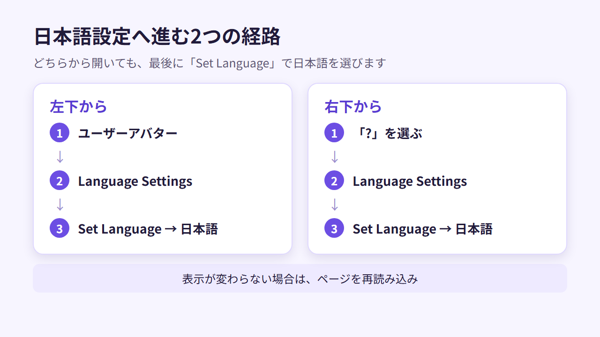
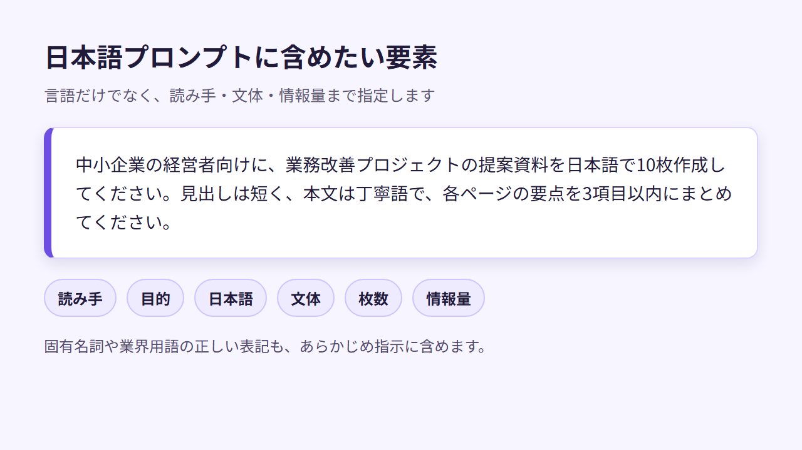

Gamma AIを日本語にする方法｜画面設定・日本語出力・サポートの対応範囲
Gammaは、テーマや原稿をもとに資料を作るAIツールです。プレゼンのほか、文書やWebページにも対応。画面表示と生成内容は、別々に日本語へ切り替えられます。
この記事では、画面の日本語化と資料作成の手順を解説します。サポートの対応範囲や、日本からの支払い方法も分かります。
Gamma AIの日本語対応状況（UI・生成・ヘルプ・問い合わせ）
- UI：日本語へ切り替え可能
- 日本語生成：日本語の指示に対応
- ヘルプ：日本語版あり
- 問い合わせ：日本語対応は未確認
- 料金表示：日本円に対応
迷ったら、まずGammaをFreeで試すのがおすすめです。
Freeは￥0です。Plus以上の円建て料金も一覧で見られます。
画面の表示言語と、資料の生成言語は別の設定です。また、日本語ヘルプがあっても、個別の問い合わせに日本語で返答があるとは限りません。
Gamma AIの画面を日本語にする手順

料金ページは日本語で表示され、FreeからUltraまでの個人向けプランが円建てで並びます。

Gammaは通常、ブラウザの言語を自動で読み取ります。英語表示のままなら、Language Settingsで日本語を選んでください。入口は左下のユーザーアバターと、右下の「?」の2か所です。
左下のユーザーアバターからLanguage Settingsを開く
ワークスペースへログインしたら、次の順に進みます。
- 画面左下のユーザーアバターを選ぶ
- メニューから「Language Settings」を開く
- 「Set Language」で日本語を選ぶ
- 表示が変わらない場合はページを再読み込みする
アカウント全体の表示言語を変えるときは、左下から進むと分かりやすいです。古い解説では歯車アイコンを使っていますが、現行の公式案内はユーザーアバターが起点です。
右下の「?」からLanguage Settingsを開く
画面右下の「?」からも設定できます。「?」を選び、「Language Settings」から「Set Language」へ進んでください。そこで日本語を指定します。
設定項目が見つからなければ、ユーザーアバターと「?」の両方を見てください。画面構成が違っても、どちらかに言語設定の入口があります。

日本語へ切り替わらないときの対処
日本語を選んでも英語表示が残る場合は、次の順で試してください。
- ブラウザの優先言語に日本語があるか確かめる
- ページを再読み込みする
Gammaは日本語に対応しているため、通常はブラウザ翻訳を使いません。Language Settingsが開かない場合だけ、補助としてブラウザ翻訳を使ってください。Gamma自体の表示と、ブラウザによる翻訳を見分けられます。
年払いと月払いを切り替え、各プランのAIクレジットやロゴ表示の違いを比べられます。
日本語の資料を生成する方法と出力品質の見極め方
UIを日本語にする操作と、資料を日本語で生成する指示は別です。GenerateまたはPaste in Textで、出力言語に日本語を指定します。書き出す前に、日本語の文字やレイアウトに崩れがないかも見てください。
プロンプトで日本語を指定する
新しい資料を一から作るなら、まずGenerateにテーマを入力します。日本語での出力を指定し、読み手や文体も伝えてください。例として、次のように書けます。
中小企業の経営者向けに、業務改善プロジェクトの提案資料を日本語で10枚作成してください。見出しは短く、本文は丁寧語で、各ページの要点を3項目以内にまとめてください。
「日本語で」と書くだけでなく、資料の目的と読み手も伝えます。敬体か常体か、1枚にどこまで載せるかも指定してください。生成後の修正を減らすためです。固有名詞や業界用語の正しい表記も、プロンプトに含めておきます。

既存の日本語原稿をPaste in Textで資料化する
すでに企画書や記事の原稿がある場合は、Paste in Textに日本語テキストを貼り付けます。ゼロから内容を考えさせず、手元の文章を資料に組み直したいときに向いています。
貼り付ける前に、元原稿を次の形に整えます。
- 見出しを本文から分ける
- 並列する内容は箇条書きにする
- 結論を明記する
原稿の構成が明確だと、生成後のページも点検しやすくなります。数字や固有名詞が変わっていないか、スライドごとに照合してください。
日本語出力で点検したい6項目
Gammaは日本語生成に対応しています。社外へ出す資料を作る前に、Freeプランで次の6点を確かめてください。
- 見出しや図中に英語が混ざっていないか
- 敬語と語調が資料全体でそろっているか
- 長い日本語が不自然な位置で折り返されていないか
- 和文フォントが資料の内容に合い、文字が欠けていないか
- 会社名や商品名などの固有名詞が正しいか
- PPTXやPDFへ書き出した後も文字位置とレイアウトが保たれているか
ブラウザ上の表示が整っていても、PowerPointではフォントや改行が変わる場合があります。社外へ渡す前に、相手が使う環境で資料を開いてください。フォントや文字位置が崩れていないか、最後に目視します。
日本語ヘルプ・問い合わせ・日本からの支払い
Gammaには日本語版ヘルプセンターがあり、料金も日本円で表示されます。主要なクレジットカードとデビットカードで支払え、請求書PDFはStripeの請求履歴から取得できます。
日本語のヘルプ記事は利用できる
日本語版ヘルプセンターでは、言語設定のほか、Gammaの機能や操作も調べられます。英語のメニュー名を知らなくても、「Language Settings」までの進み方が分かります。
ただし、日本語のヘルプ記事があっても、個別の問い合わせまで日本語で回答されるとは限りません。
問い合わせへの日本語返答は未確認
問い合わせ窓口の返答言語は、Gammaの公式案内に明記されていません。日本語での個別対応が導入条件になる企業は、契約前に対応言語を尋ねてください。
英語での対応に備え、問い合わせ前に次の情報をまとめておきます。
- 聞きたいこと
- 問題が起きた画面
- 表示されたエラーメッセージ
- 問題を再現する手順
この4点を短く書けば、翻訳ツールを使う場合でも状況が伝わりやすくなります。
日本円表示・カード・請求書PDFの扱い
日本から料金ページを開くと、Freeは￥0、有料プランも日本円で表示されます。主要なクレジットカードとデビットカードで支払えます。公式FAQに記載された主なブランドは、以下の3つ。
- Visa
- Mastercard
- American Express
JCBは公式FAQに記載がないため、利用できるとは断定できません。
有料プランの請求書PDFは、Stripeの請求履歴から入手できます。設定のBillingから「Manage subscription in Stripe」へ進んでください。Enterpriseは、発注書と支払い条件に対応しています。日本の銀行振込や請求書払いを前提とするなら、Enterpriseへの相談が必要です。
税区分や適格請求書の扱いは利用者の状況によって異なるため、経理処理は税理士へ相談してください。
日本語を優先する場合の代替候補
日本語UIと日本語ヘルプを最優先するなら、Canvaが候補です。Beautiful.aiではAI翻訳機能を使えますが、公式サイトと操作画面は英語です。
Canva：日本語UIと日本語ヘルプを優先する人向け

料金ページは日本語です。無料プランのほか、CanvaプロやCanvaビジネスが並びます。
Canvaは、日本語UIと日本語版ヘルプセンターを備えています。料金ページも日本語で、常設の無料プランとPPTX形式の書き出しに対応しています。
画面や案内を日本語でそろえたい人には、Canvaが向いています。PowerPointで開くとフォントやレイアウトがずれる場合があるため、Gammaと同じく書き出し後の点検が必要です。
無料プランと有料プランの違いを、日本語の料金ページで確認できます。
Beautiful.ai：英語UIでもAIプレゼン機能を比べたい人向け

公式サイトは英語で、無料トライアルと料金ページへのリンクがあります。
Beautiful.aiの公式サイトと操作画面は英語ですが、AIによるテキストの翻訳機能があります。有料プランの解約後はBasicへ移り、アカウント全体で100スライドまで利用できます。
日本語のメニューやヘルプが必須なら、優先度は下がります。英語UIを許容でき、AIプレゼン機能やSmart SlideをGammaと見比べたい人向けです。
英語の公式サイトで、製品画面の例を見られます。無料トライアルと料金ページへの案内もあります。
Gammaを無料で始める方法と料金記事への案内
Gammaには常設のFreeプランがありますが、有料プランを一定期間試す無料トライアルではありません。まず日本語設定と生成結果をFreeで確かめ、有料機能が必要になったときに契約を検討します。
Freeプランで日本語UIと生成を試す
Freeプランの主な内容は次のとおりです。
- 料金は￥0で、クレジットカードは不要
- 登録時に400クレジットを受け取れる
- 1回のプロンプトで作れるスライドは最大10枚
- PPTX、PDF、PNG、Googleスライドへ書き出せる
- 無料プランからPDF・PPTXへ書き出すとGammaのロゴが入る
400クレジットは毎月補充されません。まず本番に近い日本語資料を1本作り、生成前後のクレジット数を見てください。書き出したファイルの表示も見比べてください。
有料化の前に料金とAIクレジットを見る
日本語対応を試すだけなら、最初から有料プランへ申し込む必要はありません。まずFreeでUIを日本語に切り替え、PPTXかPDFに書き出します。ロゴを外したい場合や、10枚を超える資料を一度に作りたい場合に、有料化を検討してください。AIで資料を継続的に作る場合も同じです。
料金と毎月付与されるAIクレジットは、プランごとに異なります。Freeで資料を1本作り、使ったクレジット数を見てからプランを選んでください。
Freeと有料プランを同じページで見比べ、月払いと年払いの差も確かめられます。
よくある質問
画面を日本語にしても資料が英語になるのはなぜ？
UIの表示言語と、資料の生成言語は別に設定するためです。Language Settingsで日本語を選んでください。Generateのプロンプトにも「日本語で作成」と明記します。既存原稿を使うなら、Paste in Textへ日本語の文章を貼り付けてください。
日本語のPowerPointとして書き出せる？
FreeプランでもPPTXへ書き出せます。PowerPointで開き、日本語フォントと改行を見てください。文字位置のずれも見ておきましょう。Freeワークスペースから書き出したPPTXには、Gammaのロゴが入ります。
日本語で問い合わせできる？
日本語版ヘルプセンターは利用できます。ただし、個別の問い合わせに日本語で返答するという公式案内は見当たりません。日本語での個別対応が導入条件なら、契約前に問い合わせてください。
まとめ：日本語UIと日本語出力を無料枠で確かめる
Gammaは日本語UIと日本語生成に対応しています。日本語表示と少量の資料作成を試す段階なら、常設のFreeプランから始められます。
- Freeのまま試す：Language Settingsで日本語へ切り替え、日本語プロンプトで出力を確かめる
- 有料化を検討する：PDF・PPTXのロゴ削除や、継続的なAI生成が必要になったとき
- 契約前に問い合わせる：日本語での個別対応が導入条件になるとき
日本円の料金と各プランのクレジット数を見て、有料化の要否を判断できます。